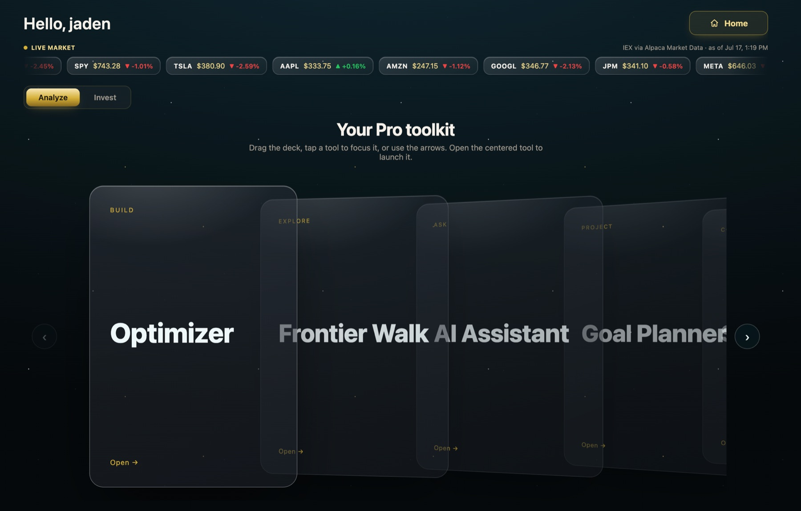
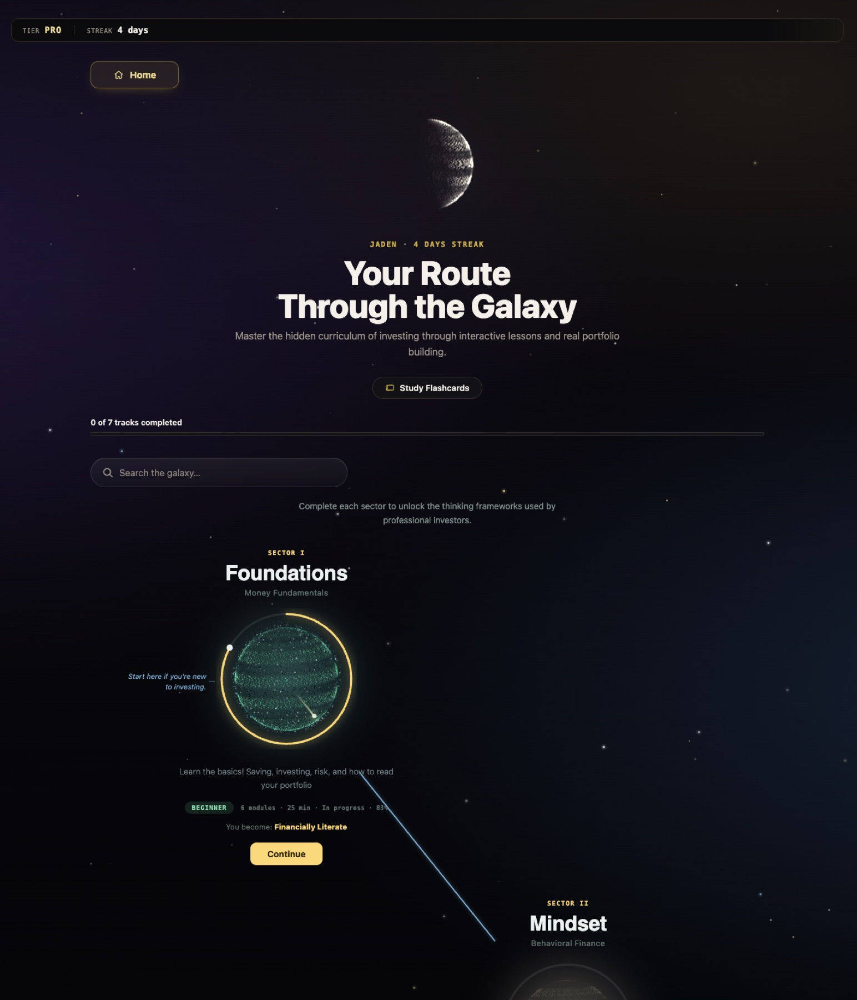
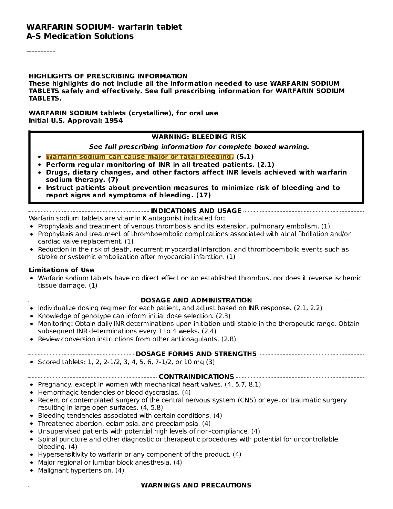
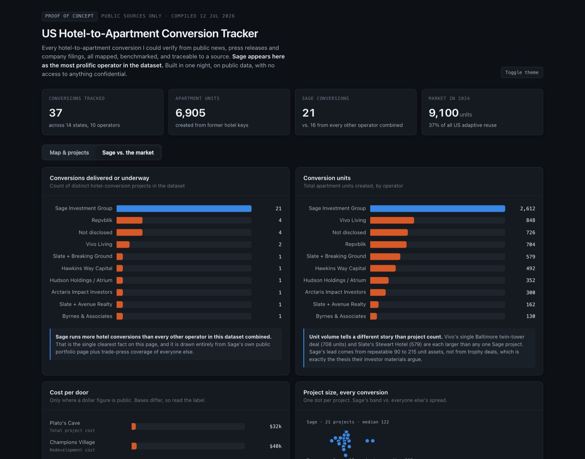

Three products I shaped from the problem down to the interface. Each one starts with a person who has a decision to make, and each one had to earn that person's trust before it could be useful. Two of them put a language model in front of the user, and both draw the same line around what the model is allowed to decide.
The home screen. Three verbs, one line of explanation each, and a status line under every one so a returning user sees where they left off.
my role
Backend lead, and I built most of the interface, including the home screen, the optimizer workspace, the assistant, and the navigation between tools.
for whom
Someone opening an investing tool for the first time, and someone who already knows what a Sharpe ratio is and wants the controls.
the constraint
The engine underneath solves eight kinds of optimization problem. None of that vocabulary can be the price of entry.
the problem
Most retail investing tools give a beginner a pie chart and no way to ask where it came from. The tools that
do show their work assume you already speak the language, with objectives, covariance models, and constraints
on the first screen. Halo had a real solver behind it, so the design question was never what the product
could compute. It was how much of that a newcomer should have to understand before getting a first answer,
and how to let the answer explain itself afterward.
design decisions
Three verbs instead of a feature list
The product does more than a dozen things. The home screen offers three, Analyze, Learn, and Invest, and everything else lives one level down inside the verb it belongs to.
Say the goal, then see the settings
A newcomer describes what they want in a sentence or picks a goal, a time horizon, and the drop they can stomach. The technical configuration that produced the answer is shown afterward, as something to read, not something to fill in.
One tool in focus at a time
The Pro toolkit is a deck you drag through, with a single centered card that can be opened. It trades density for a clear answer to "what do I do next" on a screen crowded with possible tools.
Learning as a route, not a library
The course is drawn as a path through sectors, each with a level, a time estimate, and the thing you become by finishing it. The first sector is marked as the place to start if you are new.

The Pro toolkit. Each card carries a verb above its name (build, explore, ask, project) so the deck reads as intentions.

The course map. Progress is a ring around the sector, and the outcome line states what finishing it gives you.
the ai feature
Halo's assistant takes a goal in plain words, something like wanting steady growth for retirement while
hating big drops, and returns a portfolio. The decision that shaped it was what the model is not allowed to
do. It never chooses the weights. It reads the goal and fills in a configuration (which objective, which
risk model, how concentrated any one holding may be), and the same convex solver that powers the manual
optimizer computes the allocation. The model then explains the result in two or three short paragraphs and
is instructed to end on one honest caveat.
That split is a design choice as much as an engineering one. An allocation invented by a language model
cannot be checked, and one produced by a solver from a visible configuration can. The settings the model
picked are shown beside the answer, so a user who disagrees can open the optimizer and change them by hand.
Starter prompts cover the blank-page problem, and a plain greeting gets a plain reply instead of an
unrequested portfolio.
what I would do next
The interface commits hard to its visual theme, and I would test whether that helps a first-time user or
just pleases the people who built it. The first thing I would put in front of real newcomers is the
hand-off from the assistant's answer into the manual optimizer, because that is the moment the product
asks someone to move from being told to deciding.
stack
interface
react · typescript · recharts · tanstack query
assistant
llm tool calling · cvxpy solver · fastapi
product
three plans · guided tour · verifiable certificate
AI Experience Design · Solo · 2026 · Palantir Foundry and AIP
Provenance, an AI Claims Reviewer Built Around Trust
A reviewer's workspace where a language model extracts claims from drug labels and every claim opens the exact page it came from.
The entry screen states the whole promise in six words before the reviewer sees any data.
my role
Everything. Problem framing, the claim model, the extraction prompt, the reviewer interface, and the demo.
for whom
A reviewer who has to trust an assertion before acting on it, such as a drug-safety reviewer or a regulatory analyst.
the corpus
Five public FDA drug labels from DailyMed, 240 pages in total, used as real unstructured input.
the problem
In drug safety and regulation, a decision often rests on one sentence buried somewhere in hundreds of pages
of PDF. Before a reviewer can act on a claim, they have to find where it came from, and that hunt repeats
for every claim. A language model can pull the claims out quickly. What it cannot do on its own is make a
careful person believe them. So the product is not the extraction. The product is the link from a claim
back to its source, and the interface exists to make that link one click and impossible to break.
the principle
The model extracts, it never locates. The model is trusted to identify a claim and copy
its text word for word. It is never asked where on the page that text sits. A separate deterministic step
matches the copied text against the page's own words and returns the coordinates. The highlight a reviewer
sees is therefore a property of the document, not the model's opinion of the document.

The anchoring step on a real label. The highlighted sentence was located by text match, with no coordinates from the model.
design decisions
The source is the default view
Selecting a claim opens the page with the sentence highlighted and centered, under a trail that runs from the claim to the page to the document to DailyMed.
Failure is a visible state
A claim whose text cannot be found on its page is marked unverifiable and can be filtered for. The interface does not hide what the system could not prove.
The reviewer decides
Accept, reject, or flag. The decision is saved with the reviewer's name and a timestamp as data beside the claim, so judgment does not live in a spreadsheet.
Structure pays for itself
Because claims are objects, a drug by condition matrix can show a pattern across labels, such as several drugs carrying a pregnancy warning, that no single PDF reveals.
how I checked it
I seeded twelve claims by hand across the five labels and ran them through the anchoring step. All twelve
were located on their pages. I then added a claim I had made up, and it was flagged unverifiable, which is
the behavior the whole interface depends on. Twelve claims is a small set and I treat it as a proof that
the mechanism works, not as a measure of extraction quality at scale.
what I would do next
The reviewer writes back through a general edit action that resends every field. A dedicated review action
that can only change the decision is the right production design, because the person judging a claim should
not be able to alter its text by accident. I would also sit beside a working reviewer before adding
anything, to learn whether one claim at a time is how they actually read a label.
Map and register. Marker area follows unit count, color separates one operator from the field, and a dashed ring means the unit count was never disclosed.
my role
Everything. I gathered the data, set the rules for what could appear, and designed and built the page.
for whom
An acquisitions team and the investors who read its materials, people who will ask where a number came from.
the dataset
47 properties across 14 states and 10 operators, every one traced to a public page, article, or press release.
the problem
A firm can call itself a market leader in a pitch deck, and a careful investor will discount the phrase. I
wanted to find out whether the claim could be made checkable instead, using nothing but public information.
That set the brief for the interface. The audience is skeptical by profession, so the design had to make
doubt cheap to resolve. A reader should be able to go from any figure to its source without leaving the page.
design decisions
Every row carries its source
The register can be filtered, searched, and sorted on any column, and each row links to the public page it was built from. The evidence is part of the table.
Unknown stays unknown
A field nobody has disclosed is shown as a dash, and a project with no unit count gets a dashed marker. Nothing is estimated to make a chart look complete.
Labels that stop a bad comparison
A total development cost and a redevelopment budget are different numbers. Each cost bar states its basis, because the chart would otherwise invite exactly the wrong reading.
A legible cluster
A dozen sites around Puget Sound collapse into one blob at national scale. Markers are nudged apart and tethered to their true city, and the caption says so.

The benchmark view. Each chart ends in a sentence that states what it shows, and the second one argues against the first.
writing the takeaway into the chart
Each chart closes with a plain sentence saying what it means, so a reader skimming for the conclusion gets
one. I kept the conclusions honest by letting them disagree. Project count shows one operator far ahead of
everyone else. Unit volume, right beside it, points out that two rival projects are each larger than any
single one of that operator's. A page that only flattered its subject would not survive the reader it was
built for.
what the design exposed
Holding to the rule that nothing is estimated left a hole in the cost chart, since the firm the page was
built for does not publish per-project costs and so could not be plotted. I left the gap visible and wrote
it into the page's limits. It turned out to be the most useful finding, a concrete list of what would have
to be disclosed for the comparison to be complete.
stack
interface
html · css · svg · light and dark themes
map
albers projection · marker relaxation · no external requests
data
python · public sources · cost basis per figure
Process · Across all three projects
Working with AI
One rule covers both the products I design and the way I build them.
in the product
Halo and Provenance are different products for different people, and they place the model in the same spot.
The model handles language, which is the part people find hard to do by form. A deterministic step that can
be inspected produces the thing the user will rely on. The interface then shows enough of that step for the
user to disagree with it.
in the process
I build with an AI coding assistant, and I hold it to the same rule. On Provenance I wrote the decisions
down before any code existed (the corpus, the scope of the first version, which interface to commit to and
when), then had the assistant write code and specifications against them while I worked the platform by
hand. It is fast at producing an implementation and has no stake in whether the product is right, so the
framing, the trade-offs, and the final check stay with me.
The check is the part I do not delegate. Provenance's anchoring was tested with a claim I invented to see
whether it would be caught. Halo's solver sits behind a test suite that has to pass before anything ships.
The tracker refuses to show a number without a source. In each case the question is the same one I ask of
a model inside a product. What here can a person verify without taking anyone's word for it?